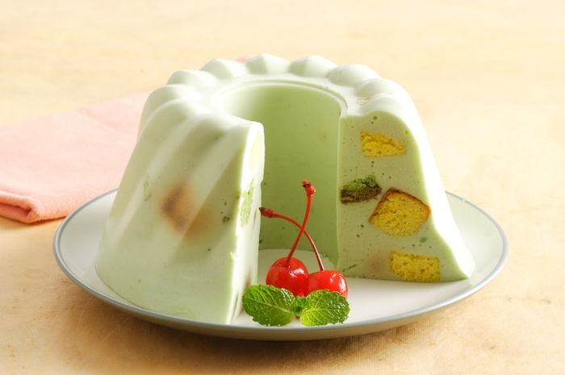

Resep puding Busa Mozaik

Bahan-Bahan:
- 350 ml santan, dari 1/2 btr kelapa
- 50 ml air daun suji, dari 15 lbr daun suji dan 2 lbr daun pandan, blender bersama 50 ml air
- 25 gram gula psir
- 25 gram gula psir
- 1 bungkus agar-agar bubuk
- 3 buah putih telur
- 1/4 sendok teh garam
- 50 gram gula pasir
Bahan taburan
- 35 gram cake cokelat, potong kotak
- 35 gram lapis surabaya, potong kotak
- 35 gram chiffon pandan, potong kotak
Langkah-Langkah:
- Langkah 1 :
- Rebus santan, air daun suji, gula pasir, daun pandan, dan agar-agar bubuk sambil diaduk sampai mendidih.Sisihkan.
- Langkah 2 :
- Kocok putih telur dan garam sampai setengah mengembang. Tambahkan gula pasir sedikit-sedikit sambildikocok sampai mengembang.
- Langkah 3 :
- Masukkan rebusan santan ke dalam kocokan putih telur sedikit-sedikit sambil dikocok perlahan dan rata.
- Langkah 4 :
- Tambahkan potongan cake. Aduk rata.
- Langkah 5 :
- Tuang ke dalam loyang tulban diameter 18 cm dan tinggi 6 cm. Bekukan